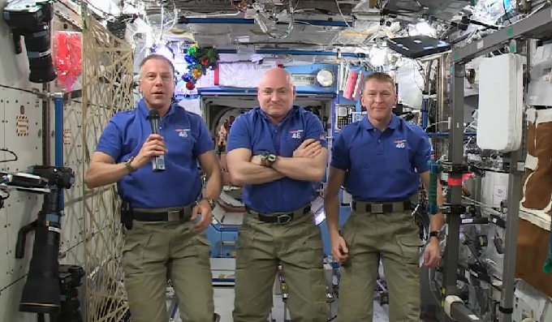
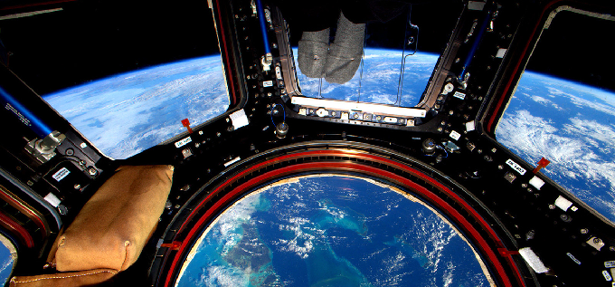

SAILING TO JAMBŪDVĪPA
Spiritual Science Applied to the Question of the Earth's Shape and Location
Dec 01, 2016 — IRELAND (SUN) — Part One.
BY: MAYESVARA DASA
The following is a response to an article by Sesha dasa entitled Vedic Cosmology, Part 2.
A brief description of the universe is contained within the fifth canto of Srimad Bhagavatam. For many readers of Srimad Bhagavatam, the section on Vedic cosmology is often regarded as the mysterious and incomprehensible part of the fifth canto that one quickly skims through in the hope of finding something easier to read and understand. Devotees of Krishna, however, should be attentive to the fact that Krishna has created the world in a certain way, and at the very least, we should come to know the nature of that part of the creation that is most close to us, namely, the Earth itself. The effort to understand this section of Srimad Bhagavatam will not be disappointing. As with all the topics discussed in Srimad Bhagavatam, the section on cosmology will open the doors of perception, and create a revolution in consciousness as predicted in the Srimad Bhagavatam itself (SB 1.5.11).
In the 1970's, Srila Prabhupada inaugurated a grand plan to display the Vedic cosmology in the Mayapur Temple of Vedic Planetarium, a building predicted to change the course of the world. The depiction of the Earth within the Vedic Planetarium is a case in point. As we shall see, the description of the Earth within Srimad Bhagavatam has life-changing implications for everyone. How does Srimad Bhagavatam describe the Earth created by Krishna? Is Srimad Bhagavatam's description of the Earth the same as the globe-shaped Earth presented to us by scientists and space agencies such as NASA; or does Srimad Bhagavatam describe something radically different? Using Srimad Bhagavatam as a guide, can we confirm or question the authenticity of these images and the science supporting them? The very question may seem absurd and irrelevant in an age that takes for granted that the Earth has been scientifically studied and photographed. But, how do we truly know what is fact or fiction about the universe we live in, and particularly about the nature of the very Earth itself? This paper addresses the subject of epistemology (the way in which we understand things, and what constitutes justifiable belief), and particularly how followers of Krishna should understand the nature of the Earth they live on.
In this paper we would like to focus on two particular aspects of this topic: (1) Srila Prabhupada's instructions that shastra (scripture) is the basis for understanding the universe; and (2) Srila Prabhupada's rejection of secular science as the primary source of information and evidence regarding the nature of life and the universe, and particularly when it disagrees with the version of Srimad Bhagavatam. We will discuss these two points in greater detail in parts two and three of this paper.
The topic is briefly touched upon in the opening paragraphs of Sesha dasa's article on Vedic Cosmology. Sesha dasa states:
"In our last presentation we looked at the Vedic conception of the World, or Jagat, and its correlation with modern scientific views and discoveries. Scientific approach toward knowledge that was given to us by sages and yogis of the past will help us to have a better picture of our Solar world. When we say "Scientific approach", we mean not rejection of Vedic views, but understanding of it in the light of modern discoveries. It is important to know what exactly Rishis of the past could see, know or describe for us. However, Vedic scriptures have some specialties of understanding. For example, the description of our Universe in the fifth canto of Srimad Bhagavatam is not a monolithicscientific treatise but a conglomerate of knowledge and views about physical and metaphysical realities. Thus, for example, Shukadeva Gosvami says that many of his descriptions are not his personal experiences, but views of different sages of past and present, which sometimes do not correlate well."
In the above paragraph, Sesha dasa throws some doubts onto the precision of Sukadeva Goswami's description of the universe, and presents the idea that we should try to understand Vedic world-views in the light of modern scientific discoveries. Srila Prabhupada's mood, however, was to scrutinize so-called modern scientific discoveries in the light of the spiritual science of the Vedic Rishis, not the other way around.
"We have to describe according to our book. That's all. If they can understand, let them understand. Otherwise... It is not our business to satisfy the so-called scientists. We are giving the real description."
(Room Conversation, June 18, 1977, Vrindavana)
In answer to Maharaja Pariksit's question about how to perceive the universal form (SB 5.16.3), Srila Sukadeva Goswami relates his description of the universe in chapters 16 to 26 of the fifth canto, and mentions that he has described the universe as he has heard it from Vedic authorities (SB 5.25.14-15). The information that he heard was originally spoken by Krishna to Brahma (SB 2.8.28) and then passed down in disciplic succession. Certainly, for faithful followers of Srimad Bhagavatam, there should be no reason to doubt the authenticity or accuracy of Sukadeva Goswami's description of the universe, and particularly the shape and location of the Earth within it. Rather, if we accept that Sukadeva Goswami is relaying accurate information about the Earth coming from Krishna Himself (the creator of the Earth), then it is the photographs and videos of a suspiciously different looking Earth from the one described in Srimad Bhagavatam that should be investigated for their authenticity. It is the 'science' of Copernicus, Galileo, and Newton which supports the heliocentric version of the universe, that should be questioned as speculative and make-believe, not the version of Sukadeva Goswami. As mentioned, we shall later make a more detailed presentation of Srila Prabhupada's instructions to accept shastra as the basis of our understanding. As we shall see, this has particular significance when it comes to depicting the Earth as described by Sukadeva Goswami, a description which has nothing in common with our present belief structure that Earth is a globular planet in space.
Sesha dasa continues:
"…in modern times, while describing some places of the Universe, we got used to the view of astronauts looking from orbit on the planet. However Sages, while describing different planets or places of existence, describe them from the point of view of inhabitants of these places. For example, the astronaut while describing our Earth would say that this is a round planet, surrounded by air and covered by oceans of liquid. That it is rotating around a star and around its axis, etc. However the Vedic yogi, while visiting Earth in his "yogic" body, would say that Earth is flat, sky is blue, that the air is full of wonderful scents. That the Sun is rising over the horizon and after passing over, sets down. That the Earth is surrounded by oceans of salted water, etc. Thus most of these narrations are not scientific treatises but attempts of description of how inhabitants feel and see their world in those places."
The above paragraph unquestionably accepts that the images of astronauts looking down on a round globe Earth floating in space are actually real images and thus empirical proofs for a globe-shaped Earth. By contrast, Sesha dasa again throws some doubts on the description of the flat Earth plane provided by Vedic sages: "most of these narrations are not scientific treatises but attempts of description of how inhabitants feel and see the world in those places." Not only did Srila Prabhupada have absolute faith in the Srimad Bhagavatam'sdescription of the universe, but as we shall see in later parts of this paper, Srila Prabhupada was a complete skeptic in regards to the photography and film presented by the American space agency. In regards to the images of the so-called moon landings of 1969-72, as well as images and scientific data purportedly taken from Mars lander in 1976, Srila Prabhupada basically threw down the gauntlet on the entire western government, science, and media, and dismissed the whole escapade as a 'colossal hoax.'
Srila Prabhupada's attitude to the film and photography coming from scientific and governmental institutions has much bearing on our present investigation into whether contemporary images of astronauts floating in space above the globe Earth are actually real images, or just a continuation of what Srila Prabhupada continually dismissed as 'bogus propaganda.' It is significant in our present discussion about how to understand the Earth, because the only photographic images we have of the so-called Earth globe come from the very sources that Srila Prabhupada out-rightly rejected:
Prabhupada: This bluffing. And this moon planet going means Arizona. That is now disclosed. They take photographs in the Arizona. That's all...
...Everything they are doing in Arizona. All photograph in this place. Now they have been caught. I was always protesting, "These rascals have never gone." For the last ten years I've protested. Whenever they asked me, I say straightly, "It is all childish. They have never gone, neither they'll be able to go." That has been proof available. Now they do not talk about it. That is finished, all propaganda, finished. Now they have taken another...
Tamala Krishna: Mars.
Prabhupada: ...to keep their service in order. This is going on, all cheating. To keep people in darkness and exploit them. The so-called swamis exploiting, yogis exploiting, politician exploiting, scientists exploiting, philosophers exploiting. What is the position of the world? And this is the opportunity, human life, to know everything, to solve all the problems. They are not given the opportunity, they are kept in darkness. The demons. "There is no God, science is everything, life is produced from chemicals, and there is no living entities on other planets." They are simply show. This planet is full of..., it is all scientists, and they are vacant. And we have to believe that. Perhaps for the first time I am raising protest against all this nonsense.
Tamala Krishna: It is such a challenge. Your statements are such a challenge to their so-called science that they're still in shock. I still think that they do not take us seriously yet because it's such a difference to what they are saying. Soon, gradually, they'll take...
(Morning Walk, July 10, 1976, New York)
Tamala Krishna Goswami's words have proved prophetic. Now after forty years, a practical Internet revolution against the American Space Agency is gradually revealing the truth of what Srila Prabhupada understood by shastra-chakshusa (seeing through the eye of scripture), namely, that the moon landing and related space escapades were no more than staged events and propaganda. This has opened a whole other can of worms wherein intrepid Internet sleuths have discovered that not only has NASA been faking images of astronauts (astro-NOTS) on the moon, but also faking images of the very globe itself. In later papers we can look at some examples of these fraudulent images and videos.
Of course, certain philosophers and scientists have believed that the Earth was a globe hundreds of years before NASA, but such speculative ideas were only supposedly 'proven' once and for all by the first photographic images of the globe Earth taken from outer space at the time of the 1969-1972 moon landings. In the statements below, Srila Prabhupada said that if the moon hoax is exposed, then the whole civilization will change. The moon hoax and the globe hoax are intimately connected, and the exposure of the former leads inevitably to the exposure of the latter. If, as Srila Prabhupada says, the exposure of the moon hoax will cause the civilization to change, what then to speak of news that the globe itself is fake.
Prabhupada: If we can expose that they never went to the moon planet, their life will be finished.
(Morning Walk June 4 1976, Los Angeles)Prabhupada: If they simply follow strictly this moon expedition and they admit they have not gone, then the whole civilization will change. All wrong conclusion. But they will have to admit now. Now they are serious, and they will have to say that they've never gone to the moon. And they will have to continue this. Otherwise they will be farce before the world. They will have to continue it. Now they are in such a position.
(Morning Walk, May 16 1975, Perth)
In the statement above, Srila Prabhupada notes that in order for the American Space Agency to maintain the lie regarding the moon hoax, they would have to continue bluffing the public with further space so-called space adventures. Such is the way of falsehood:
Prabhupada: You see? They want to draw some salary, big salaries, by bluffing the government and the public. This is their business. They are failing. They have finished their business on this planet; now they are going another planet. These are nonsense......That is the way of falsehood. If once you speak something false, then to protect that falsehood you have to take to so many other falsehoods. This is the way of falsehood...
Devotee (3): Prabhupada, when they said they went to the moon and they showed films of them landing and walking on the moon, was this all a bluff?
Prabhupada: Yes, here they... All laboratory work, that's all.
Devotee (3): They all made it up?
Prabhupada: Yes.
(Morning Walk, June 2, 1975 Honolulu)
Srila Prabhupada's statements are significant in regard to our understanding of images of the Earth itself. If the first images of the Earth came from a moon-landing which according to Srila Prabhupada never happened, then it forces us to question and investigate the authenticity not only of those original Earth images, but also all subsequent images of the Earth coming from the same agency. The point is made strongly below:
Prabhupada: Why if one is settled up that he's a rascal, we should not hear anything. And why not? He has not gone to the moon. They are insisting, "Yes, we have gone," by false propaganda. Why the one who makes false propaganda and one who says nonsense, we have to believe? Immediately, whatever he says, reject. There's no argument. You have proved yourself rascal so we don't accept any statement.
(Conversation about Bhu-mandala, July 5, 1977, Vrindavana)
Followers of Srila Prabhupada who defend the globe model, are thereby obliged to defend as authentic, the images of such illustrious captains in space as Scott Kelly and Tim Peake (pictured center and right within the International Space Station).


Scott Kelly's photo of the Earth from the ISS
Take careful note, however, of Srila Prabhupada's uncompromising statement above about the truthfulness of any so-called astro-NOT who is likewise obliged to perpetrate the moon-landing hoax: Immediately, whatever he says, reject. There's no argument. You have proved yourself rascal so we don't accept any statement.
It is our contention that contemporary video and photographic images of astro-NOTS in space, such as those on the so-called International Space Station, are simply a continuation of the same 'way of falsehood' begun in the 1960's, and involving nothing more than increasingly sophisticated 'laboratory work' (Srila Prabhupada's term for special effects departments). These effects are easily achieved as we can show later.
For those members of the International Society for Krishna Consciousness who find such claims too conspiratorial, I humbly request that you at least try to understand and imbibe something of why Srila Prabhupada taught and practiced absolute faithlessness in these so-called space programs. This will require that you take the time to review what Srila Prabhupada had to say on the issue, which will be the focus of our presentation in later parts. Don't be afraid to look into the issue. Whether the globe is real or false, you will not be going against Srila Prabhupada's mood of inquiry by investigating the truth of the issue. Please bear in mind the example of Srila Prabhupada himself. During the most spectacular media-hype of the Twentieth Century, when the world was held in awe as American astro-NOTS walked on the so-called surface of the moon, Srila Prabhupada was most probably the first person to fearlessly denounce the whole escapade as a hoax. On the very day of the moon-landing, as the eyes of the world watched Neil Armstrong disembark from his space capsule to make the historic 'small step for man and great leap for mankind,' Srila Prabhupada defiantly stated to his students that they did not go. The incident is retold as follows by Srila Prabhupada's disciple, Malati devi dasi:
"One morning [at 7 Bury Place, London] I went up to Prabhupada's door and it was a little ajar. I pushed it to look inside and Prabhupada called out, "Malati, come in, we are watching TV." So I went in and they were watching the Moon landing. I sat down with them and we watched them land on the Moon. Immediately afterwards Prabhupada turned off the television and declared, "They did not go." He looked at the TV and said it "This is an idiot box and it has made idiots of us."
Of course, that statement "they did not go" became quite controversial. There were devotees, including his servant Purushottama, who cited that statement as reason for departure from devotional service. They simply could not accept Shrila Prabhupada's statement. Then, two years ago, I found a newspaper with a headline "They Did Not Go to the Moon." It was written by two former NASA scientists. And in it they showed the picture of the Moon landing and gave various evidences as to why they did not go to the Moon so that an ordinary person could comprehend it."
(Memories of Srila Prabhupada DVD 47)
Srila Prabhupada's statement that they did not go to the moon was his consistent stand until the very end:
"And they are going to moon. They are going nowhere, simply taking laboratory photo, studio photo, and cheating. Why this cheating can go on? You do not know."
(June 28, 1977, Vrindavana)
Whatever one thinks on this issue, one fact is certain as pointed out by Srila Prabhupada here: "You do not know!" This could be taken in two ways: (1) You do not 'know' because you(referring to all of us) are in ignorance of what is happening. You don't know that such a scam is actually taking place, or how they are creating the scam, or the motive behind such a scam. Just as an audience is over-awed by an illusionists tricks, accepting them as real, so the world audience is over-awed by the trickery of agencies such as NASA who convince an unsuspecting audience that they fly around in space, when in reality they are like everyone else, confined by karma, and unable to get out of the Earth's atmosphere. Meanwhile, they take billions of tax-payers money for 'scientific research' and laugh all the way to the bank. You do not know all of this is happening, but here Srila Prabhupada is trying to inform you that it is so. (2) Secondly, 'You do not know' can be taken in the sense that you have no personal experience of going into outer space and further to the moon itself. You are always dependent on some else's testimony which of course may be true or not.
Srila Prabhupada would often have to pointedly remind his dedicated but somewhat doubtful disciples that they themselves had no first-hand experiences of being in space or on the moon, and were simply accepting without question the official narrative:
Harikesha: They have taken pictures from the moon taken of the earth Prabhupada: Pictures? First of all you see. Then take picture. You cannot see.
(Morning Walk, June 1975, Honolulu)Prabhupada: Did you go to the moon planet or you believe the newspapers? Have you gone?
Gargamuni: No.
Prabhupada: Then if you can believe newspaper, why shall not believe in the Veda, Vedanta?
Gargamuni: No, but one man has come.
Prabhupada: So one man... You have not done. You have no experience. So one man you believe authority.
Gurukrpa: But we saw the television. They showed on the television.
Prabhupada: No. Television could not show that. You can arrange in the laboratory such television, cheat others. And you have done it. But anyway, television or man or newspaper—you believe on others. You have not personally gone. So you believe some authority. We believe some authority. What is the difference. You take newspaper as authority. We take Vedic literature as authority. Where is the difference? You have personally not gone. How do you believe? The difference is that you believe somebody, we believe somebody.
(Evening Conversation, January 25 1977, Jaganatha Puri)
Unlike, certain followers of Srila Prabhupada who express an almost unnatural reluctance and resistance to question the official 'narrative' regarding the Earth globe, Srila Prabhupada exhibited the brahminical qualification of scrutinizing everything in order to ascertain the truth:
"So you should have depth of knowledge, otherwise you will be carried away by these rascals. We cannot be carried away by these rascals. We never so easily believed that they are going to the moon planet. You see? We have to scrutinize everything. Yes. That is brahminical qualification. A brahmana will not accept anything simply because it is said by some rascal. A sudra will accept because he has no intelligence. That is the difference between brahmana and sudra. …Kalau sudra-sambhavau. "In this age, Kali-yuga, all sudras." Therefore they accept everything cheaply and at once, the sudras."
(Room Conversation, April 1 1972 Sydney)
For all who wish to enter the discussion on whether the Earth is a globe or not, may I humbly request that you at least try and imbibe something of the questioning, scrutinizing, and challenging spirit of Srila Prabhupada who fearlessly flew in the face of public opinion:
Prabhupada: So I am the only man in the world challenging that "You have not gone to the moon planet." Eh?
(Morning Walk, June 2, 1975, Honolulu)Prabhupada: They do not go and even they go, they take photograph from millions of miles. What is the value of these things? But people are accepting that "Oh, scientific research." Perhaps I am the only man in the world who is protesting. (laughs) Eh? Everyone is accepting, "Oh, it is scientific."
(Room Conversation, November 2 1976, Vrindavana)
The image of the globe-shaped Earth is perhaps the most iconic image in our modern world. To question its authenticity is to immediately put one in the category of crank, lunatic or blasphemer. So sacred is the image of the globe-shaped Earth floating in spacethat to claim the opposite – that the Earth is not a globe, but a vast horizontal plane – is to be a modern heretic, a disbeliever in reality as we know it. But who is behind the creation of this image of reality? Has the reader any independent means to confirm the actual reality of the Earth's shape and location? The reader may think, "But I have seen the Earth with my own eyes." But think about that again. The most that any of us has ever seen of the assumed Earth globe is images and videos of the so-called Earth globe made by other people. Finding no immediate reason to doubt the authenticity of such images provided by NASA and other space agencies, we assume that the version of Srimad Bhagavatam must be either wrong, or describing something beyond our comprehension or dimension.
The inclination of the mind, intelligence, and false ego conditioned by the present 'scientific' paradigm of the Earth, is to immediately doubt the fantastic description of the great Earth circle by the Vedic Rishis. One may favour NASA's images of the Earth globe over some ancient yogi's description, simply because it is assumed that people in the past had no way of knowing the true feature of the Earth. One presumes that a lack of accessibility to modern technology such as spacecraft and satellites meant that the ancient rishis simply speculated and imagined fantastic landscapes that have no bearing on reality. It does not enter a person's mind to question if modern rockets and satellites can actually make it into outer-space. The spectacular images of astronauts hovering above the globe-shaped Earth as they fix their International Space Station are so frequent, brilliant, and realistic, that they must be real. It couldn't just be the special effects department of cheating governments creating these videos because we would know the difference between the real thing and something fake. Right?
I mean come on! Why would anyone, or any agency, have the reason or audacity to cheat the world on such a scale? And how could anyone cheat you, the reader?
Are astronauts really floating around in space; or are they simply floating around massive replicas of the International Space Station in huge underwater tanks that NASA refer to as their 'training facilities.'
Special effects technology can easily produce the effect of astronauts in space. If the reader has not personally been into outer space, on what basis do you evaluate the truth or falsity of these images? Just because they look real? Just because the government and media say they are real? Just because everybody else believes they are real? Just because the quasi-science you are taught in school about heliocentricty and gravity supposedly prove that it is real? But is any of it real? Have you ever second checked any of it?
And what is real anyway? The epic opening statement of Srimad Bhagavatam is to distinguish reality from illusion for the benefit of all (SB 1.1.2). Should we do that? Should we concern ourselves with understanding what is real and what is illusion? Is our present material identity real, or are we actually eternal spiritual beings experiencing an illusion of material existence? Is that a question worth pursuing? Does the question of reality and illusion apply to the Earth itself? Is the image of the Earth as a globe in space a real image? Or is it part of a deception, an illusion created to cover the real feature of the Earth? Is that a question worthy of discussion and investigation? Certainly Srila Prabhupada thought so! Srila Prabhupada initiated research into the Srimad Bhagavatam's fifth canto cosmology which would form the basis of a visual presentation within the up-coming Mayapur Temple of Vedic Planetarium:
"Now our Ph.D's must collaborate and study the 5th Canto to make a model for building the Vedic Planetarium…So now you all Ph.D.'s must carefully study the details of the 5th Canto and make a working model of the universe. If we can explain the passing seasons, eclipses, phases of the moon, passing of day and night, etc. then it will be very powerful propaganda. I am sending this letter to you, and you can make photocopies of it and send to our other Ph.D.'s and begin serious research into the matter in detail."
(Letter to Svarupa Damodar, 27 April 1976)
This creates a conundrum because if the mandate of the TOVP (and any other ISKCON representative writing on Vedic cosmology) is to present the cosmology of Srimad Bhagavatam, it cannot legitimately present Earth as a globe in space if no such description of a globe in space actually occurs in the Srimad Bhagavatam itself. One cannot simply stick an Earth globe into an exhibition of Bhagavatam cosmology simply because one 'believes' the Earth is a globe floating in space. There is certainly no scriptural evidence from Srimad Bhagavatam or any of the Puranas that the Earth is a globe in space.
For those who may be just entering this discussion on the question of the Earth globe, I'd like to quickly review points raised in previous papers on the subject and explain where the issue is coming from. Despite the fact that Srila Prabhupada himself spoke of the Earth as a globe and a planet, his repeated instruction to those researching for the Vedic Planetarium was to follow the description of Srimad Bhagavatam. This description, however, clearly depicts the Earth as a vast circular plane that spreads out in the form of a lotus, and certainly not in the form of a small globular planet. We have detailed the relevant verses from Srimad Bhagavatam which describe the great Earth plane or Bhu-mandala in part three of "Earth is Not a Globe".
The issue of Srila Prabhupada's usage of the words 'planet' and 'globe' are easily resolved by understanding that research into the fifth canto was only begun in earnest in 1977, and was certainly not concluded by the time of Srila Prabhupada's departure in November 1977. Thus, Srila Prabhupada generally spoke of the Earth in conventional terms as a globe and planet, for the simple reason that although Sukadeva Goswami's description of the Earth had been translated, it had not yet been deciphered. This is very clear from the conversations in 1977 between Srila Prabhupada and a number of his disciples who were working on the project to research and present the Srimad Bhagvatam's cosmology in the Temple of Vedic Planetarium. We have presented this history in part two of the paper called "Earth is Not a Globe".
As we have presented in the above papers, Srila Prabhupada described himself as a layman on matters of cosmology, and delegated the task of studying and presenting the fifth canto cosmology to his disciples. His only stipulation being that they present the version of Srimad Bhagavatam as described by Sukadeva Goswami. In the final issue, therefore, authority is given to Srimad Bhagavatam itself. If Srila Prabhupada's desire is to present Srimad Bhagvatam as it is, then a dutiful disciple or follower of Srila Prabhupada will present and explain the Earth as it is described by Sukadeva Goswami. Srila Prabhupada's usage of the words 'Earth globe' and 'Earth planet' is not a license to depict and explain the Earth of Srimad Bhagavatam as a globe within the Temple of Vedic Planetarium, when no such description actually occurs in Srimad Bhagavatam itself. This fact, at least, has been admitted by representatives of the Temple Of Vedic Planetarium. So-called supporting evidence for a globe in secondary literature such as Surya Siddhanta are clear interpolations on the verses in question. As we have pointed out already in these earlier papers, the identification of the Sanskrit name Bhu-gola (round Earth) with the assumed Earth globe is simply the imposition of a preconceived globe concept onto the ancient Sanskrit texts without reference to the original descriptions of names, measurements, and characteristics of the Bhu-gola provided by Sukadeva Goswami in Srimad Bhagavatam. Yes, there are references to Srila Prabhupada associating the name Bhu-gola with the Earth globe concept, but more important is his directive to follow the description of Srimad Bhagavatam. This cannot be ignored. The attempt to silence any discussion on this issue by simply quoting Srila Prabhupada's statements about the Earth being round, is a lazy and expedient measure to ignore the intricacies of the issue.
In the above link to the paper Earth is Not a Globe, Part Three, we have gone through the relevant Sanskrit verses from Sukadeva Goswami's description of the names Bhu-gola, Bhu-mandala and Bharata-varsha. The vast measurements and fabulous characteristics of the Bhu-gola as described by Sukadeva Goswami, as well as the shape and location of Bharata-varsha upon the Bhu-gola do not correlate in any way, shape, or form, to the assumed Earth globe of 24,900 mile circumference supposedly floating around in space. In complete disregard of the actual description, advocates of the globe concept continue to insist that Bhu-gola is a reference to the assumed Earth globe, when factually it is nothing of the sort.
Sukadeva Goswami describes the Bhu-gola (round Earth) as a 4 billion diameter circular plane that spreads out like a great lotus, and certainly not a 24,900 mile globe floating is space. The 'roundness' is like that of a motorway round-about, not a ball. So please note carefully: There is no description in Srimad Bhagavatam of the Earth as a small 24,900 mile Earth planet floating in space. The planets are actually described as a separate category from the Earth plane itself. Incredible as it sounds, the Earth plane is actually the central and largest feature in the universe. According to Sukadeva Goswami, the continents of our own Earth are not located on a globe-shaped planet floating in space, but rather in an area of the great Earth plane called Bharata-varsha. Bharata-varsha is one of the nine varshas (parts) of an 800,000 mile island called Jambudwipa. Jambudwipa itself is further surrounded by vast areas of the greater Earth area called Bhu-mandala (Earth circle). An actual satellite image of Bharata-varsha in relation to Jambudwipa would look something like this:
Jambudwipa is the first and smallest of the seven islands and oceans (sapta-dwipa) that form the central area of the Bhu-mandala. Considering that these islands and oceans measure 202,800,000 miles and expand uniquely in concentric circles, we cannot obviously associate them with the tiny irregular-shaped continents and oceans on our assumed Earth globe. Again, this is another demonstration that Bhu-gola is not to be mis-identified with the assumed Earth globe. Inside the Earth core are seven subterranean realms containing the abodes of the asuras and nagas. These realms go down for hundreds of thousands of miles below the surface of the Earth. Again no comparison with our present globe concept.
Contrary to the images of the Earth as a small globe in space, Srimad Bhagavatam describes Bharata-varsha (where the continents of our Earth are situated) as only a small part of a greater Earth plane (that we have not as yet heard of). Historical narrations in the Vedic literature do, however, speak of a time when these parts of the greater Earth were connected. Maharaja Yudhisthira, for example, had sovereignty over all of Jambudwipa, which according to Srimad Bhagavatam, is an area measured at 800,000 miles in length and breadth. Yudhisthira's rule over Jambudwipa is stated in Srimad Bhagavatam: jambudvipadhipatyam ca (SB 1.12.5). Maharaja Pariksit, the grandson of the Pandavas, continued as emperor of Jambudwipa until the Kali-yuga began.
"Maharaja Pariksit then conquered all parts of the earthly planet — Bhadrashva, Ketumala, Bharata, the northern Kuru, Kimpurusha, etc. — and exacted tributes from their respective rulers." (Srimad Bhagavatam 1.16.12)
Here all the specific varshas of Jambudwipa measuring a total area of 800,000 miles are mentioned. Such a calculation makes no sense with our existing concept of the Earth as a globe, but it does make sense from the conception that the Earth continues on a vast horizontal plane. Although Srila Prabhupada uses the term 'earthly planet' in his translation to the verse above (SB 1.16.12), and indeed throughout his Srimad Bhagavatam translations and purports, in pursuance of Srila Prabhupada's desire to present the cosmology of Srimad Bhagavatam as it is, we have gathered all the relevant original Sanskrit verses that show conclusively that the Earth of Srimad Bhagavatam is described as a vast horizontal plane, and not a globular planet floating in space.
Sukadeva Goswami's description of the Earth creates an alarming disparity between the Vedic and modern world-views. Certainly, the Earth that Krishna created, as described in Srimad Bhagavatam, is nothing whatsoever like the images and descriptions presented by NASA and the scientific community. For the devotees of Krishna and followers of Srila Prabhupada who have grown up in an era of so-called space exploration, the conception of the Earth as a vast horizontal plane (and not a globe in space) presents an obvious challenge to one's faith in Srimad Bhagavatam. It is perhaps the ultimate challenge to one's sense of reality. The very Earth one thought was real, also turns out to be part of the great illusion.
The obvious question to ask is: if Srimad Bhagavatam indeed presents the absolute truth, why did Sukadeva Goswami not explain the Earth as a globe-shaped planet floating in space? The simple answer is because there is no such thing as a globe-shaped Earth planet in Krishna's creation. The idea that Earth is a globe is an illusionary idea. As already mentioned, the Earth described in Srimad Bhagavatam is a vast circular plane measuring for billion miles in diameter, of which the continents of our known Earth area form only a speck. Many reasonable arguments can be put forward to show that the globe is a fabrication of modern speculative philosophies beginning with Copernicus that continues to the present day with the quasi-science of heliocentricty supported by the special effects department of NASA. In any case, according to Srimad Bhagavatam, Bharata-varsha (where the continents of our own Earth are situated) is clearly described as resting at the southern side of the 800,000 mile Jambudwipa (the central island on the plane of Bhu-mandala). This description would make it impossible for Bharata-varsha to be a globe-shaped planet floating in space.
WHY IS THE SHAPE OF THE EARTH AN ISSUE?
Why is the shape of the Earth an issue? The issue of the shape of the Earth becomes relevant when we consider Sukadeva Goswami's description of our position on the Earth plane. According to Sukadeva Goswami, our known Earth actually continues, and we are surrounded by vast areas of inhabited lands and oceans that spread out across the center of the universe. If true, this description would have a life-changing impact on one's psychological and spiritual relation to the Earth itself, to all life upon it, and ultimately to Krishna Himself. It would also mean having to deal with the sinister fact that we have been lied to on a colossal scale. It would thus oblige one to either fearlessly question, or sheepishly acquiesce, with those who have created and maintain the stupendous belief that we are standing on a small globular planet floating in space, when according to Sukadeva Goswami, we are actually standing on a vast immovable plane that is actually the largest feature in the universe.
The description of the Earth in Srimad Bhagavatam marks the beginning of a clash of world-views that challenges one's very sense of reality, as well as challenging one's faith in authorities both mundane and transcendental. An investigation into the authenticity of these non-Vedic and secular sources of information, science, and authority about the Earth, would mean having to consider the possibility that our perception of the Earth as a globe in space is a false construct of reality, and the so-called Earth 'planet' we thought was real, is not. That, however, is a massive mental adjustment that many may not be able to face. If the Earth is not a globe, this would open up the possibility that Srimad Bhagavatam's description of a continual Earth plane may perhaps be true. Perhaps too true! It would make Krishna too real. For many people (including devotees of Krishna who wish to maintain certain illusions about material existence), the shattering of a fundamental illusion may be too much reality for one to accept. For some, defending a globe model in the Temple of Vedic Planetarium would thus be a matter of priority, even though (amazingly) Srimad Bhagavatam provides no such description. Krishna however, always allows for the independence of the jiva and undoubtedly many fantastic speculations will manifest from within the Vedic cosmology department in order to reconcile two versions of the Earth that are actually completely and fundamentally opposed.
As the situation presently stands at the TOVP, the Bhu-mandala as described by Sukadeva Goswami will be presented in the main dome exhibition of the TOVP. However, the actual 'scientific' teaching to the people (in secondary exhibitions) will be that the Earth is indeed a globe in space. This contradictory presentation will have the net effect of obscuring the actual description of a vast circular Earth plane that continues in all directions to the shell of the universe itself. The greater Earth plane will remain obscured by the teaching that it is in another dimension and out of our sight. However, the rest of the Earth plane is out of our sight, not because it is in another dimension, but simply because we don't have the karmic jurisdiction to go there and see it. The greater Earth plane is not seen in satellite images from outer space, because it is impossible to get such men and equipment through the Earth's defensive atmosphere. The images of the globular Earth floating in space are fake.
The truth of the matter is that politics and affinity for the present scientific paradigm may play more of a role in the TOVP presentations than its stated purpose which is to present and explain Srimad Bhagvatam as it is. Politics and bewilderment by mainstream science will dictate that despite what the Srimad Bhagvatam says, and despite the Vedic history of a greater Earth area, the TOVP will have to tell the world that the Earth is indeed a ball floating in space. The politics of the thing is thus obviously more important than the truth of the thing. The false ego, unable to stand the threat of humiliation for defending Srimad Bhagavatam'sactual description of the Earth, opts for the safer version of an Earth globe that ironically is not even to be found in the Srimad Bhagavatam itself.
However, as the rising sun disperses the darkness of night, the present appearance of Krishna in the world will eventually disperse all forms of ignorance, speculation, and illusion. Ignorance, illusion, and untruth cannot stand in the presence of the satyam param or Absolute Truth (SB 1.1.1). The facts about the Earth and our place upon it will gradually become revealed through the medium of Srimad Bhagavatam, and its visual presentation within the Temple of Vedic Planetarium. This may take generations to accomplish as our present devotee community have grown-up unquestionably accepting the prevailing paradigm that they are living on a globe floating in space.
The application of spiritual science to the question of the Earth's shape and location in the universe, means to see the Earth through the eyes of scripture (shastra cakshusa). The description of the universe provided by Sukadeva Goswami will inevitably become the basis of a new spiritual science to understand and explain the nature of the Earth in the universe. It will eventually displace the ideas of Copernicus, Galileo, and Newton, which created the modern belief that the Earth is a small planet rotating in space. It will demonstrate these ideas to be nothing more than unproven speculations. The spiritual science inspired by Srimad Bhagavatam will further expose the fraudulent images of the Earth presented by NASA and other space agencies as the greatest lie ever told.
It is indeed disconcerting and frightening to think that one could be deliberately misled by such awesome powers of speculation, deception, and illusion. In reality, such potency can only come from the Lord's own maya energy to delude the fallen souls of Kali-yuga who wish to remain in ignorance about the nature of God and His creation. The renowned speculative philosophers and scientists such as Copernicus, Galileo, and Newton, as well as government agencies such as NASA are simply instruments of maya, that cover, rather than reveal reality. The temple of Vedic Planetarium is meant to reveal the truth of the matter to the world at large.
Prabhupada: Yes. That we want. They have become unnecessary authorities and misleading people. That we want to expose.
(Room Conversation, July 6, 1976, Washinghton DC)Jayapataka: ...exhibit the farce of modern science.
Prabhupada: Hm?Jayapataka: Farce of modern science, and every philosophy and science group, where they are just cheating the public. Then exhibit how Krishna consciousness is showing the real way.
Prabhupada: Yes. So do that in this planetarium. (Morning Walk, March 18, 1976, Mayapur)
End of part one - continued on part two
Download article
earth-shape-and-location1.pdf
earth-shape-and-location1.doc